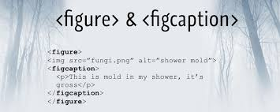

Virar expert em semântica no HTML. Saber mais sobre a importância da
acessibilidade no HTML. Conhecer novas tags estruturais e criar um
site do jeito que tem que ser.
HTML Semântico
HTML é o primeiro padrão para a criação de páginas web. O HTML
Semântico utiliza tags específicas para organizar e estruturar o
conteúdo da página, fazendo com que o HTML faça sentido, facilitando
a navegação e a manutenção do conteúdo. Tags semânticas ajudam robôs
e leitores de tela a interpretar melhor o contexto.
Melhorias nas versões do HTML
A grande tendência é que o HTML passe a ser apenas estrutural,
deixando a formatação para o CSS.
Acessibilidade em HTML refere-se às práticas e recursos que tornam
websites e aplicações web acessíveis a todos os usuários, incluindo
pessoas com deficiências. Isso envolve o uso de elementos
semânticos, atributos como alt em imagens, e ARIA
(Accessible Rich Internet Applications) para melhorar a navegação
por leitores de tela, teclados e outros dispositivos assistivos,
garantindo que o conteúdo seja compreensível e funcional para todos.
"Rastreador" (Crawler) - é um termo genérico para
qualquer programa usado para descobrir e examinar sites
automaticamente seguindo links entre páginas da Web.
Web scraping é a técnica de extrair dados de sites
de forma automatizada. É amplamente utilizado para mineração de
dados, monitoramento de preços, coleta de informações para pesquisa,
entre outros fins.
Embora não seja ilegal por si só, deve-se ser ético ao utilizá-lo.
Bem feito, o Web Scraping pode nos ajudar a fazer o melhor uso da
web, como exemplificado pelo Google Search Engine.
<header>, <main>, <footer>
<header>
Cabeçalho da página.
<main>
Tag que contém a funcionalidade central da aplicação. Deve haver
apenas uma por página e conter o conteúdo principal, não repetido
em outras páginas.
Entre as tags semânticas que podem ser utilizadas no footer, temos
a <address>, que indica que o conteúdo é um
endereço.
<nav>, <section>, <aside>
<section>
Agrupa conteúdo relacionado em uma seção distinta, útil para
estruturar capítulos ou tópicos dentro de uma página. Não deve ser
usada como um container genérico, para isso que a <div> serve;
especialmente quando a seção é apenas com propósito de aplicação
de estilo. Um regra de ouro é
usar quando uma seção deva aparecer logicamente na estrutura de
um documento.
<nav>
Define um bloco de links de navegação, como menus ou barras de
navegação. Geralmente é usada a lista não ordenada para indicar os
links.
Dependendo do local em que ela é colocada indica sua importância
no contexto da página.
Dica: Dentro da tag <a> se colocar
href="tel:+55xxXXXXXXXXX" ela abre o aplicativo de ligação.
<aside>
Usada para conteúdo complementar ou relacionado ao principal, como
barras laterais, anúncios ou links adicionais.
<article>, <blockquote>, <q>
<article>
É usada para definir um conteúdo independente e autossuficiente,
como um artigo de jornal, post de blog ou qualquer outra peça de
conteúdo que possa ser distribuída de forma independente.
Permite aninhamento. Quando coloca um 'article' dentro de outro,
semanticamente falando, o article de dentro é relacionado ao de
fora.Um bom exemplo seriam perguntas e respostas.
O uso da tag 'time' com parâmetro 'pubdate' dentro do 'article'
também é interessante pois semanticamente significa a data de
publicação do artigo.
Exemplo de uso do 'article'
Artigo publicado em
Qual o seu prato favorito?
Strogonof de frango
<blockquote>
Serve para marcar uma citação em bloco de outra fonte,
geralmente com recuo e formatação especial. Uma URL para a fonte
da citação pode ser dada usando o parâmetro 'cite'.
<q>
É utilizada para indicar uma
citação curta
dentro de um texto, inserindo aspas automaticamente ao redor do
conteúdo citado. Também pode ser usado o parâmetro 'cite'
<figure>, <figcaption>, <picture>
São usadas para organizar e descrever imagens em uma página web.
<figure>
É um container, ou seja, uma 'div' que você vai usar para colocar
coisas dentro dela. Define um bloco de conteúdo autônomo,
geralmente usado para agrupar uma imagem com uma legenda.

Exemplo de uso das tags 'figure' e 'figcaption'.
<bfigcaption>
Serve para adicionar uma descrição ou legenda à figura. Deve ser
usada dentro da tag 'figure' para que semanticamente seja
entendido que a descrição é relativa à midia que estiver em cima,
pode ser imagem ou vídeo.
<picture>
É utilizada para oferecer diferentes versões de uma imagem para
diferentes dispositivos, permitindo que o navegador escolha a mais
apropriada com base em condições como resolução de tela.
Resenha: o que é SEO
Search Engine Optimization (Otimização para Mecanismos de Buscas)
É um conunto de técnicas voltadas para otimizar o posicionamento do
site em mecanismos de buscas.
A SEO é crucial para que seu site seja encontrado por mecanismos de
busca, seja ele um site simples, um site com conteúdo relevante ou um
site com conteúdo que seja útil para os visitantes.
Dicas para otimizar seu HTML para ele aparecer melhor nas buscas.
'title' - adicione títulos que condizem com o conteúdo da página
e que tenha entre 50 e 60 caracters (quantidade máxima de
caracteres do título da busca do Google).
No 'head' da página coloca a tag <meta name="description"
content="texto que vai aparecer abaixo do título">.
Utilizar a semântica do HTML.
Estudar sobre a comunidade colaborativa Schema.org